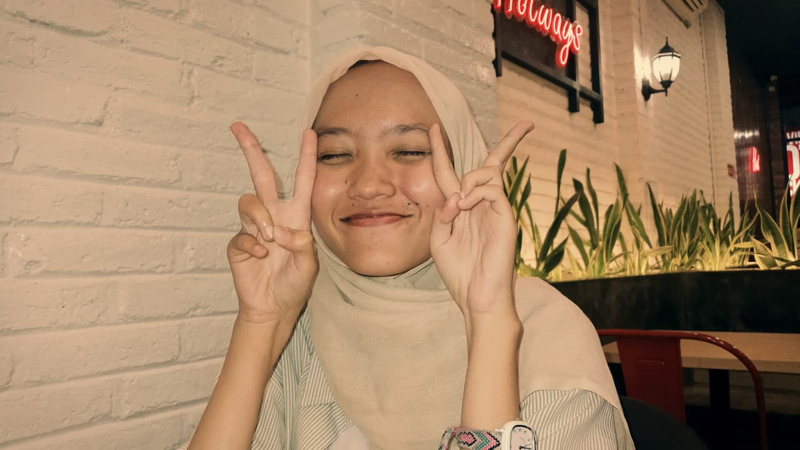
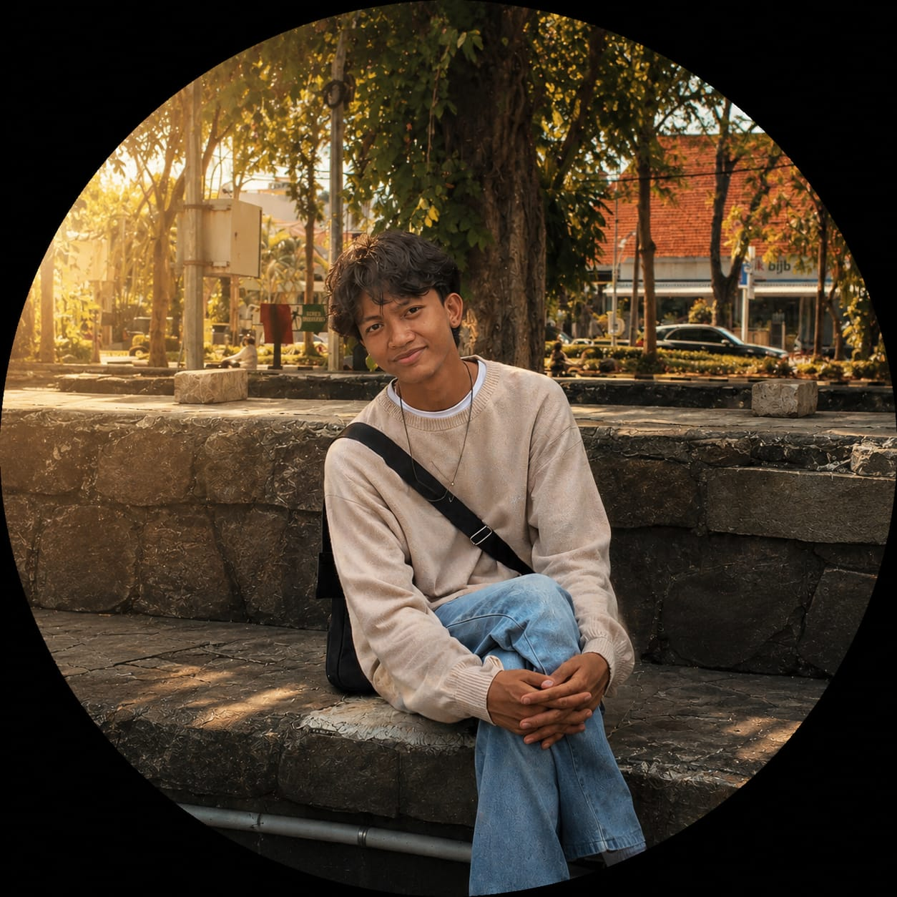

Menelusuri Jejak Puncak Kejayaan Majapahit Pada Masa Kepemimpinan Hayam Wuruk Melalui Website Interaktif
| Mata Kuliah | : Workshop Desain Kreatif |
| Semester | : 2 |
| Tahun Akademik | : 2025/2026 |
| Program Studi | : Teknologi Rekayasa Multimedia |
| Institusi | : Politeknik Elektronika Negeri Surabaya |
| Kelompok | : 4 |
Mata Kuliah Workshop Desain Kreatif
Program Studi Teknologi Rekayasa Multimedia
Politeknik Elektronika Negeri Surabaya
Kelompok 4 — Teknologi Rekayasa Multimedia
Politeknik Elektronika Negeri Surabaya

5325600007
Copywriter5325600016
Project Manager5325600022
Project Lead
5325600023
Web Developer5325600024
InterviewerKami mengucapkan terima kasih kepada Bapak Rendra Suprobo Aji, ST, MT., CAPM selaku dosen pengampu Mata Kuliah Workshop Desain Kreatif yang telah memberikan arahan, bimbingan, serta masukan selama proses perancangan website interaktif ini.
Terima kasih juga kepada seluruh anggota Kelompok 4 Program Studi Teknologi Rekayasa Multimedia Politeknik Elektronika Negeri Surabaya yang telah bekerja sama dalam proses riset, desain, pengembangan, dan penyusunan konten sehingga proyek ini dapat diselesaikan dengan baik.